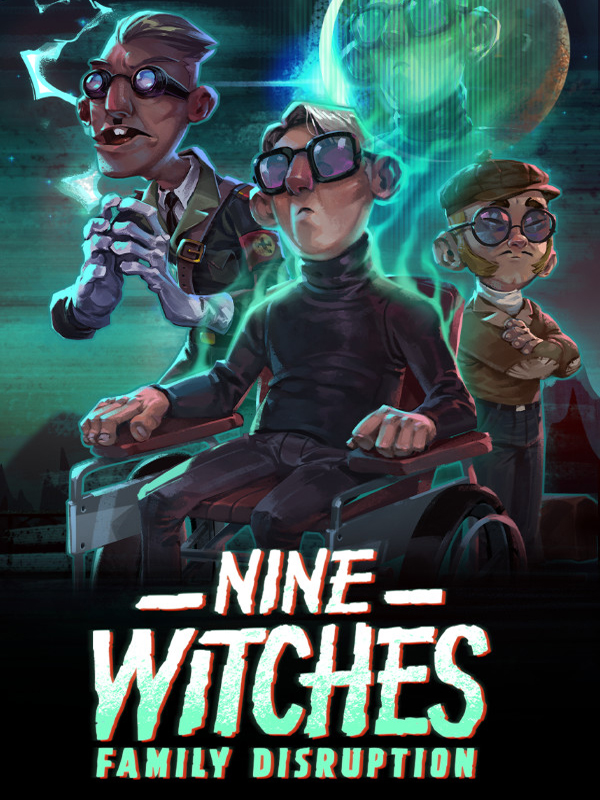

Nine Witches: Family Disruption
Nine Witches: Family Disruption
Details
|  | |
| Playtime | Not Played |
| Last Activity | Never |
| Added | 5/21/2024 11:47:16 |
| Modified | 5/21/2024 11:47:47 |
| Completion Status | Not Played |
| Library | Amazon Games |
| Source | Amazon |
| Platform | PC (Windows) |
| Release Date | 12/3/2020 |
| Community Score | |
| Critic Score | 70 |
| User Score | |
| Genre | Action Adventure Indie |
| Developer | Indiesruption |
| Publisher | Blowfish Studios |
| Feature | Single-Player |
| Links | Steam Official GOG Twitch |
| Tag | |
Description

October 1944, something strange is happening in Sundäe, a rustic Norwegian town where a mysterious dark moon hangs over the sky, generating uncertainty among its inhabitants.
As World War II continues, the Okkulte-55, a secret division of the Third Reich, arrives in Sundäe to unleash an ancient curse, in a desperate act to twist the course of the war.
Alexei Krakovitz, a quadriplegic professor of occult science and Akiro Kagasawa, his faithful assistant, are sent to Norway on a secret mission to unravel the mystery and save the world from the Okkulte-55 clutches.

An original story with absurd dark humor, riddled with eccentric characters, diabolical inventions, puzzles, occultism, talking dead, witches, worms, a mysterious party, and an ancient curse that threatens the human race.
An adventure so delusional that it will make you delirious to the delirium itself!
Ha-Ha!

Features
- Truly and unique original story. (99.999999% GUARANTEED)
- Single player, dual character action-adventure with puzzle-solving elements.
- Join professor Alexei Krakovitz and his loyal Japanese assistant, Akiro Kagasawa, in their heroic crusade against the Okkulte-55.
- Retro-pixel style artwork.
- Meet a quirky cast of characters
- Visit Sundäe, a town oppressed by the Okkulte-55, on the northwest coast of Norway.
- Talk with the dead